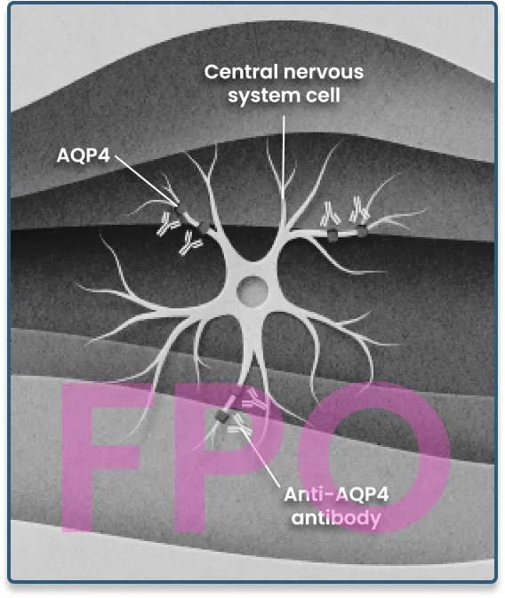

A Cause of Damage
Understanding anti-AQP4 antibody-positive NMOSD attacks is a first step toward managing your condition
Anti-AQP4, anti-aquaporin-4; NMOSD, neuromyelitis optica spectrum disorder.

NMOSD is an autoimmune disease
When you have NMOSD, your body attacks its own healthy cells. In anti-AQP4 antibody-positive NMOSD, part of your immune system called "complement" damages your central nervous system (CNS), which consists of your brain, spinal cord, and optic nerve.
At first, anti-AQP4 antibody-positive NMOSD attacks usually affect the spinal cord or the optic nerve. Each attack can lead to new or worsening disability, so it’s important to let your doctor know if you think you’ve had an attack.
Signs and symptoms of an anti-AQP4 antibody-positive
NMOSD attack
Attacks can be identified by serious symptoms such as sudden vision loss or partial paralysis. Common symptoms of anti-AQP4 antibody-positive NMOSD attacks include:
- Blurry vision or blindness in one or both eyes
- Weakness or paralysis in the legs or arms
- Painful spasms
- Numbness or loss of sensation throughout the body
- Persistent nausea
- Uncontrollable vomiting
- Persistent hiccups
- Bladder or bowel dysfunction
- Sleeping problems
What’s behind an attack
The immune system protects the body, including through a chain of proteins called "complement." In a healthy person, the complement system helps to defend against bacteria, viruses, and other threats. But most people with NMOSD have anti-AQP4 antibodies, which can activate the complement system during an attack. Once activated, a part of the system called C5 proteins mistakenly attack and damage healthy cells in the CNS.
NMOSD attacks can result in:
Optic neuritis, which may cause pain in the eye and vision loss
Transverse myelitis, which may cause weakness or paralysis of arms and legs
Numbness, which may also cause a loss of bladder and bowel control
Severe nausea, vomiting, and hiccups
The attack begins
When an attack begins, anti-AQP4 antibodies attach to CNS cells and mistakenly activate the complement system.
The complement system activates
The complement system sets off a chain reaction that creates C5 proteins.
C5 proteins cause damage
C5 proteins attack healthy cells, resulting in CNS damage.

Navigate your NMOSD
In most people with NMOSD, anti-AQP4 antibodies trigger a response from the complement system, which acts through key C5 proteins to mistakenly attack healthy cells in your CNS, causing the symptoms that you may experience.